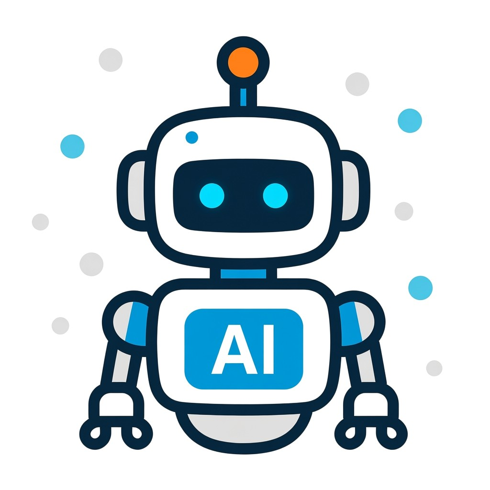

Marek Vondra · jak vzniklo moje CV
Abych se pokaždé trefil do konkrétní pozice, nechávám si CV skládat malým AI agentem. Funguje ve dvou jasně oddělených krocích. Tady je to vysvětlené bez žargonu, na jedné stránce.
Než agent cokoliv napíše
Roky si vedu sedm textových souborů: co umím, co jsem vedl, jak přemýšlím o architektuře a o lidech. Agent si z nich nic nevymýšlí — jen vybírá a přeformulovává to, co je relevantní pro danou pozici.
Jak agent pracuje
Krok 1 řeší co v CV bude — obsah. Krok 2 řeší, jak to bude vypadat — grafiku. Jsou to dva samostatné programy, které se nikdy nepletou do práce toho druhého.
Agent pošle celou znalostní bázi a konkrétní popis pozice modelu Gemini s instrukcí, aby sestavil CV šité přesně na tuhle roli — co vyzdvihnout, co zkrátit, jaké zkušenosti jsou nejrelevantnější. Výstupem je čistý text ve formátu Markdown, žádná grafika.
Hotový textový CV vezme samostatný program a převede ho do finálního PDF — layout, barvy, fonty, zalomení stránky. Tenhle krok už s žádným AI modelem nekomunikuje, běží okamžitě a lokálně.
A tady je ten důvod
Kdyby jeden krok generoval obsah i grafiku najednou, každá drobnost — jiné rozestupy, jiná barva, posunutý nadpis — by znamenala nové volání AI modelu. Takhle si text vygeneruju jednou a grafiku pak ladím donekonečna sám, bez AI.
Transparentnost: každé takhle vytvořené CV na konci jasně uvádí, že bylo sestaveno AI agentem z podkladů, které jsem sám napsal. Agent nic nevymýšlí — pouze vybírá a formuluje z toho, co je pravda.